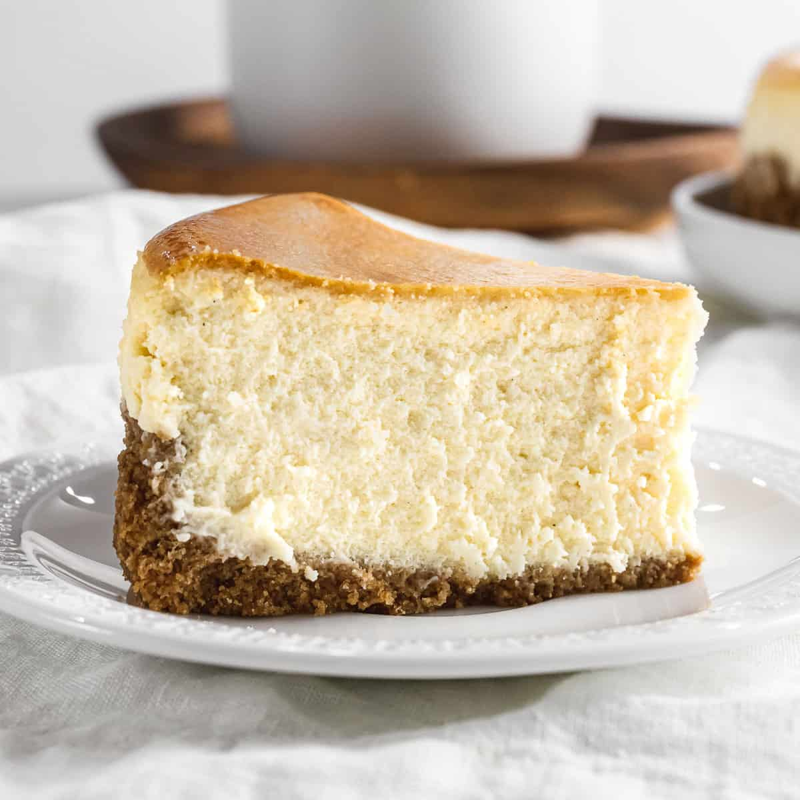

Classic Cheesecake

Description
This slightly modified* recipe for a delicious plain cheesecake proves you don't need a springform pan to make a good cheesecake. As always make sure to skim the recipe before you start. Happy Baking!
* this recipe is modified from the original
Ingredients
- 1 and 1/2 cups Graham Cracker Crumbs
- 1/3 cup Unsalted Butter, melted
- 1 cup and 3 tbsp White Granulated Sugar
- 32 oz Cream Cheese, softened
- 1 tsp Vanilla Extract
- 4 Eggs
Steps
- Preheat oven to 325 degrees F.
- Mix crumbs, butter, and 3 tbsp sugar. Press firmly into the bottom of a parchment lined baking dish.
- Beat cream cheese, 1 cup sugar, and vanilla in a mixing bowl until smooth. Add eggs, one at a time, mix until just blended. Be careful not to over beat the eggs.
- Pour cream cheese mix over crust, and place in the center of the preheated oven until the center is set. Roughly 55 minutes.
- Let it cool and firm up a bit after removing from the oven. Gently lift from pan via the parchment paper. Refrigerate until desired temperature, cut, and enjoy!